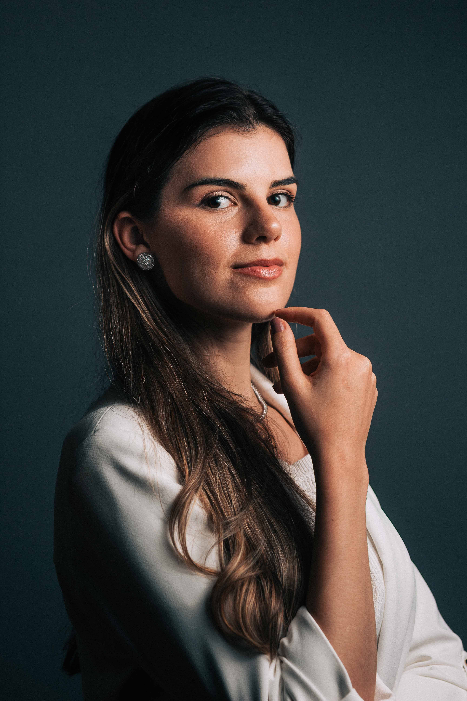

Lorenzo Sevieri cria direção visual, narrativa e retratos
estratégicos para profissionais da saúde que querem
ser percebidos como referência.
É sobre construir a forma como seus pacientes, colegas e o mercado percebem você. A imagem que você projeta influencia diretamente a confiança que inspira, a autoridade que transmite e o valor que o mercado atribui ao seu trabalho.
Médicos que dominam a narrativa e possuem uma marca pessoal forte atraem melhores pacientes, fecham melhores parcerias, são percebidos como referência e são escolhidos primeiro.
Cada entrega foi pensada para construir autoridade, não apenas tirar fotos bonitas.
Cada detalhe é planejado com intenção — postura, expressão, vestuário, ambiente. Você aparece exatamente como quer ser percebido.
Criamos uma narrativa coerente com seus valores e conduta profissional. A intenção é transmitir a mensagem exata para atingir todos os seus objetivos.
Mais que fotografias. Retratos que transmitem sua essência como pessoa e profissional. Imagens que transmitem confiança, sofisticação e credibilidade – prontas para Instagram, site, anúncios, consultório e palestras.
Conteúdo intencional pensado para redes sociais, site e demais materiais profissional. Uma narrativa coerente e identidade de alto padrão em todos os canais.
Diferenciação real no mercado médico. Sua imagem passa a refletir o valor do seu trabalho e a atrair o perfil de paciente que você deseja.
Não existe fórmula genérica. Cada projeto começa com diagnóstico profundo da sua especialidade, objetivos e marca pessoal. diagnóstico profundo de quem você é, especialidade, objetivos e marca pessoal.
Você é médico, dentista, dermatologista, ortopedista, oftalmologista ou especialista em outra área e quer ser reconhecido como referência na sua área.
Você sente que profissionais medianos se destacam mais que você, apenas por ter um posicionamento forte.
Você não tem tempo para você e sua família devido ao alto valor de consultas, e deseja cobrar mais para trabalhar menos.
Você está cada vez mais dependente das consultas do plano de saúde e não sabe como se livrar disso.
Você quer transmitir confiança e sofisticação para atrair o perfil certo de paciente ou parceiro.
Cada etapa foi desenhada para construir percepção, não apenas produzir conteúdo.
Entendemos de maneira profunda sua especialidade, público, como você deseja ser percebido e onde existe ruído entre discurso, postura e imagem. Seu posicionamento começa aqui.
Construímos a narrativa que vai conduzir seu paciente até o agendamento. Usando arquétipos estratégicos, construímos uma comunicação que alinha valores pessoais e conduta profissional.
Definição de ambiente, postura, vestimenta, acessórios, símbolos, cores e iluminação que irão guiar a sua narrativa de forma visual.
Sessão de retratos estratégica que sintetiza todo o projeto de posicionamento. Mais que imagens, são retratos que transmitem sua essência como pessoa e profissional.
Começo do projeto de posicionamento com ajustes nas redes sociais, site e demais mídias. Em seguida, começa a produção de conteúdo pensada com a direção narrativa e visual.
Cada imagem é construída para comunicar o que sua especialidade exige: confiança, autoridade e valor percebido.

Não atendemos todo mundo. Essa especialização é o que garante profundidade real no posicionamento de cada cliente.
Cada projeto começa pela história que precisa ser contada, não pelo equipamento ou pela técnica.
Usamos arquétipos estratégicos na comunicação para que você seja percebido com uma autoridade na sua área.
Unimos narrativa, imagem e posicionamento de mercado em cada projeto executado.
Nenhum projeto é igual ao outro. A direção é construída do zero para a sua especialidade e objetivos.
Mais autoridade percebida, mais engajamento, mais confiança transmitida — impacto real no seu posicionamento.
Especialista em Marca Pessoal para Médicos
Cada projeto é resultado de um diagnóstico profundo com o objetivo de te posicionar como uma autoridade. Mostramos como você quer ser visto, por quem e com qual propósito.
Ao longo da minha trajetória, desenvolvi um método exclusivo que une direção narrativa e visual e profundo entendimento do mercado médico. O resultado é um posicionamento consistente que te transforma em uma referência.
"Posicionamento não é só estética. É ocupar um espaço na mente do paciente com uma narrativa coerente e sólida."
"Passei a transmitir muito mais confiança no Instagram. Meus seguidores sentiram a diferença — e minha agenda também. As fotos finalmente representam o nível do meu trabalho."
"A percepção dos meus pacientes mudou. Recebo comentários frequentes sobre como meu perfil transmite segurança e profissionalismo. O Lorenzo entende o que médicos precisam comunicar."
"Finalmente tenho uma identidade visual coerente com o meu nível profissional. O processo foi totalmente diferente do que eu esperava — muito mais estratégico e pensado. Recomendo sem hesitação."
Vagas limitadas por mês para garantir a dedicação que cada projeto exige.
Agende sua consulta estratégica gratuita agora.
Consulta gratuita · Sem compromisso · Resposta em até 2h